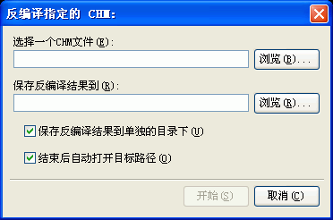

在程序主菜单"工具"下点击"反编译指定的CHM"，在弹出的"反编译指定的CHM"对话框里分别指定待反编译的CHM文件以及保存反编译结果的目录,Easy CHM会把CHM文件包括的全部源文件解压缩到指定的目录下.

在什么时候会需要反编译？
当您的网页源文件都找不到而只有制作好的CHM文件时，或者是当您希望对某个CHM文件进行二次编辑时都需要先反编译--也就是先得到CHM文件里的全部源文件，以便再次编辑.
Easy CHM可以从CHM文件里还原.HHP格式的工程文件吗?
不能, Easy CHM不能, 但是ChmDecompiler可以完美地从CHM文件里还原.HHP格式的工程文件.
| 版权所有 © 2000-2007 国华软件 保留全部权利. |